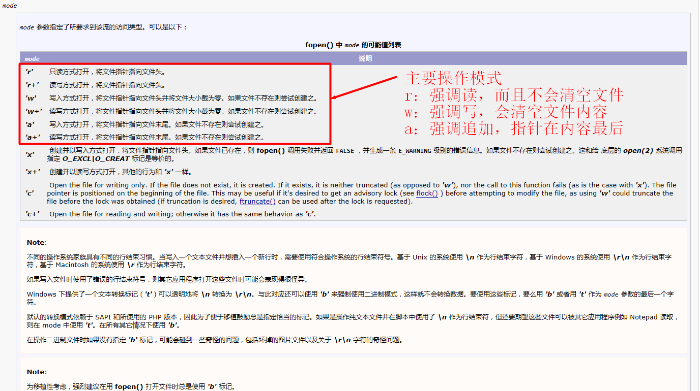

文件编程
思考：在进行PHP开发的时候，有时候会需要对文件进行操作，例如文件夹管理和文件管理等，这些操作PHP有提供扩展吗？
引入：文件操作是每个后端编程语言必不可少的一部分，因为在后台操作的时候一定会涉及到文件的操作，这个时候就需要PHP来进行处理。
文件编程认识【了解】
定义：文件编程，是指通过PHP代码对广义文件（包括文件夹和文件）根据需求进行增删改查的操作。
1.文件编程的作用：在PHP进行开发的过程中，势必会要根据用户的需求和业务来处理一些文件问题，如果目录管理（文件夹）以及具体文件操作。尤其是当PHP进行一些高级处理的时候，如爬虫等，一定要用通过文件来进行数据管理
2.文件编程分类：文件编程通常分为两类，目录操作和文件操作
总结：文件编程在开发Web网站的时候，并不是所有网站都会用到，但是涉及到用户管理的网站的时候，基本都会用到。
思考：现在很多程序都是安装式，包括web网站也是。但是如果网站要安装到本地，肯定会有很多的程序目录（文件夹），系统是如何完成的呢？
引入：其实文件夹编程是一种底层的系统行为，因为所有的文件和文件夹都归属于系统的管理。PHP提供了一套内部系统交互机制，能够允许开发者通过PHP提供的操作机制来实现对系统文件夹进行管理。
文件夹操作【掌握】
定义：文件夹操作，就是对某个目录的文件夹进行增删改查操作。
1.新增文件夹操作：使用PHP中mkdir(文件夹名字[,模式])，其中文件夹名字可以是绝对路径也可以是相对路径，而模式是Linux下的权限，在Windows下没有意义
<?php
//在当前目录下创建一个upload文件夹
mkdir('upload');
//在当前目录下创建一个image文件夹
mkdir('D:/server/Web/image');
?>
2.文件夹的新增如果碰到文件夹已经存在，那么系统就会提示错误。创建文件夹的目的是为了让对应的文件夹存在，所以如果已经存在也无所谓，要做的事情，就是抑制mkdir可能出现的错误即可。
<?php
@mkdir('upload'); //即便是存在也不会有问题了
?>
3.删除文件夹：与新建文件夹一样，使用系统自带函数rmdir(路径名字)，同样的在使用rmdir的时候会碰到文件夹不存在的时候，使用错误抑制符即可。
<?php
//删除文件夹：可以使用相对路径和绝对路径
@rmdir('upload');
@rmdir('D:/server/Web/image');
?>
4.rmdir删除目录有要求：目录必须为空，所谓为空是指文件夹里除了默认的.和..两个隐藏文件夹，没有其他任何文件或者目录，否则会删除失败返回FALSE
<?php
$res = @rmdir('D:/server/Web'); //这个目录不为空
var_dump($res); //FALSE
?>
5.修改文件夹，所谓修改文件夹就是修改文件夹的名字，即重命名。使用PHP提供的rename(旧名字,新名字)，另外值得一说的是rename是针对所有文件（包括文件夹和文件本身），rename也有可能不存在目标文件，所以使用错误抑制符
<?php
@mkdir('upload');
@rename('upload','UPLOAD');
?>
6.读取文件夹，就是读取到文件夹中的所有内容（文件名字）。PHP中提供了两种方式来进行操作，一种是直接使用系统函数scandir(路径名字)得到该文件夹下的所有文件名；还有一种是通过手动操作opendir(路径)得到资源，然后使用readdir(资源)进行手动访问
- scandir自动获取所有文件名字数组
<?php
//获取所有文件夹内的文件名：循环遍历出来
$dir_info = scandir('D:/server/Web');
foreach($dir_info as $file){
echo $file . '<br/>';
}
?>
- opendir得到文件夹资源，然后使用readdir读取资源（指针操作：访问一个移动一下），最后用closedir关闭资源
<?php
//读取文件夹内的前5个文件
$dir_r = opendir('D:/server/Web'); //成功返回资源，失败返回false
//判断路径是否有效打开
if($dir_r){ //资源转换成布尔为true
//开始读取资源
for($i = 0;$i < 5;$i++){
$filename = readdir($dir_r); //读不到资源返回false，其他使用返回名字
//判定
if($filename === FALSE) break;//如果没有5个文件，那么提前结束
//输出名字
echo $filename . '<br/>';
}
//结束资源：文件夹资源通常比较大，建议要关闭（不关闭就等到脚本结束自动关闭）
closedir($dir_r);
}
?>
7.文件夹的操作通常具有不可知性，即程序不知道要操作的文件夹是否存在，以及是否是文件夹等，为了较少代码出错率，通常需要使用系统函数来判定路径的有效性。
- is_dir(目录)：判断是否是路径，不是路径返回false，是路径返回true
- getcwd()：获取当前工作路径
- rewinddir(目录资源)：将opendir打开的资源指针重新回到第一个
- chdir(目录)：修改当前的工作路径，即不用修改访问的文件的真实路径，让文件中可以得到新的工作路径（当前文件不会移动）
<?php
$dir = 'D:/server/Web/image';
//判定路径有效性
if(is_dir($dir)){
//有效路径
echo getcwd(); //D:/server/Web，获取当前工作路径
//修改工作路径
chdir($dir); //修改到指定路径下
echo getcwd(); //D:/server/Web/image，到达$dir指定工作目录环境
}
?>
8.练习：写一个函数能够输出指定文件夹的所有文件，并且使用红色输出的名字是文件，蓝色输出的是目
总结：文件夹操作在实际开发中根据项目需求来确定应用，但是通常大项目都会用到，因为要进行文件管理的时候，通常会写程序来实现操作。（小项目手动即可）。
思考：PHP在进行文件编程的时候，有没有可能会需要对文件本身以及其中的内容进行操作呢？
引入：PHP其实在自己内部有很多地方都是通过文件进行操作的，如高级编程中的session都是以文件形式存储和管理的。开发人员实际开发的时候，还是需要根据具体的业务来进行选择。
文件操作【掌握】
定义：文件操作相对来说比较多，不仅仅是要对文件进行增删改查，还要对文件的内容能够进行增删改查。
1.新增文件：PHP中新增文件的逻辑比较霸道，即创建文件的目的就是为了往里面放东西，所以新增文件通常伴随着打开文件。系统函数fopen(文件名,操作模式)打开文件，并且得到文件的资源（用完要关闭资源）。其中如果被打开文件不存在，则创建文件；操作模式必须选定。操作模式如下如下 
<?php
//注意：所有文件操作案例都是Windows，如果是Linux，必须考虑要操作的文件有权限操作
//只读方式打开文件：只读不会创建文件，为了保证文件安全，通常带上b（二进制）
$f1 = @fopen('hello.html','rb') or die('文件不存在');
//读写方式打开，不存在便创建文件：因为会创建文件，所以不需要判定
$f2 = @fopen('hello.html','w+b');
//关闭资源
fclose($f1);
fclose($f2);
?>
2.删除文件：操作系统删除文件不是立马将文件彻底从磁盘抹去，而是将文件名指向磁盘实际存储数据（磁道）的链接给断掉，所以PHP也是提供这样一种机制：unlink(文件名)，成功返回true，失败返回false
<?php
//删除文件，可能文件不存在，所以增加一个错误抑制符
@unlink('hello.html');
?>
3.修改文件：文件修改只有文件名字，所以就是目录操作中的rename()函数。但是如果涉及到修改文件内容，那就是往内容中增加东西了。fwrite(文件资源,字符串内容)，所有的内容都会被当做字符串写入
<?php
//写的方式打开资源
$f = @fopen('hello.html','wb') or die('文件打开失败');
//判断操作
if($f){
//成功打开，写入成功返回写入字节数，失败返回false
@fwrite($f,'<h1>hello world</h1>') or die('文件写入失败');
//关闭资源
fclose($f);
}
?>
4.读取文件：读取文件就是通过已经打开的资源，从资源中取出根据文件指针取出对应的数据来。fread(文件资源,读取长度)，是按照长度读取资源，且最多读取一行（看哪种情况先到）；
<?php
//打开资源
$f = @fopen('hello.html','rb') or die('文件打开失败');
echo fread($f,8192); //读取8192个字节数据，实际要看一行数据有多少
//关闭资源
fclose($f);
?>
5.使用这种方式读取数据的话，有的时候需要读完，那么如何判断已经读完了呢？可以使用feof()函数判定资源
<?php
//打开资源
$f = @fopen('hello.html','rb') or die('文件打开失败');
//循环获取
while(!feof($f)){
echo fread($f,1024); //每次读取1024个字节，直到读完
}
//关闭资源
fclose($f);
?>
6.有的时候读取或者写入数据需要明确就是全部操作或者一次性操作，那么PHP5以后提供了一种方便快捷的方式：file_get_contents(文件路径)和file_put_contents(文件路径,内容字符串[,写入方式])
<?php
//读取文件全部内容
$file = file_get_contents('hello.html');
//file_get_contents也可以读取网络资源
$web = file_get_contents('http://www.taobao.com/index.php');
//写入内容
file_put_contents('hey.html',$file); //没有文件会自动创建，默认是覆盖原有内容
//追加内容：使用第三个参数系统常量FILE_APPEND
file_put_contents('hey.html','hello world',FILE_APPEND);
?>
7.文件操作的相关常用函数
- file(文件路径)：将整个文件以行为单位读取，返回一个数组
- fgetc(文件资源)：一次读取一个字符
- fgets(文件资源)：一次读取一行
- file_exists(文件路径)：判定一个文件或者目录是否存在
- fseek(文件资源,指针位置)：谁定fopen打开的资源的指针位置
- fileatime(文件路径)：获取文件最后访问时间
- filemtime(文件路径)：获取文件最后修改时间
- filesize(文件路径)：获取文件大小
8.练习：编写一个函数，获取一个指定路径（路径外部提供）下的所有文件，返回一个二维数组，数组信息包括：文件名字，文件类型（目录还是文件），最后访问时间，最后修改时间和文件大小
总结：文件操作通常现在用的比较多的就是file_get_contents和file_put_contents，因为这个比较方便快捷。而PHP在开发过程中实际对文件的操作最多的也就是一次性读取和一次性写入，除非文件太大才会采用部分获取的方式。
思考：文件夹中的目录层级是不确定的，而目前的目录操作都只能获取一层文件夹中的所有文件，那么意味着如果想要获取里面的全部文件信息的话，就没有办法实现？
思考：其实能够获取一个文件夹中的所有内容，又能判定文件夹中的文件是目录还是普通文件。理论上是可以实现获取所有的，但是在代码的实现上就需要使用到一些技巧，这个技巧就是递归思想。
递归算法
定义：递归是这样的一种思想，有一个很大的问题，但是这个问题可以拆分成很多个相同的小问题，小问题与大问题一样，只是规模较小。以文件夹显示所有文件为例：根目录的文件夹所拥有的文件是最多的，但是每个文件夹去收集所有文件都是同样的问题，只是子文件夹的文件量较小而已。因此，我们只需要解决获取一个文件夹的所有文件的问题，然后碰到文件夹后再用解决方案重复解决即可。所以我们可以通过代码实现将小问题解决好，然后不断的调用自身代码去解决更多的问题，就可以实现解决全部问题。在函数中，递归的定义很简单：函数自己调用自己。
1.递归算法有两个重要思想：因为要在函数内部调用自己容易造成无限调用
- 递归点：就是碰到的问题与当前函数解决的问题一样
- 递归出口：就是函数调用要有尽头，什么时候函数能够不再调用自己
//定义函数解决一个问题
function solveProblem(){
//代码解决问题
//事情解决完毕（递归出口）：函数结束（结束未必一定是return，可以是函数运行完也没有碰到新问题）
//发现新问题（递归点）：与现状函数解决的问题一样，调用自己
solveProblem();
}
2.以斐波那契数列为例：用一个函数实现求得对应位置的斐波那契数列值
- 递归点：斐波那契数列的元素值都是由前两个数之和构成
- 递归出口：斐波那契数列的第一个和第二个数都是1
① 写一个函数结构，用来实现获取对应斐波那契数列的具体位置的值
<?php
//获取指定位置的斐波那契位置的值
function fbnq($n){
}
?>
② 找到递归出口，就是函数什么时候结束：就是当$n是第一个和第二个的时候
<?php
//获取指定位置的斐波那契位置的值
function fbnq($n){
//寻找递归出口
if($n == 1 || $n == 2){
//说明应该结束，这个值是确定的，就是1
return 1;
}
}
?>
③ 寻找规则，就是递归点：从第三个数开始，就是前两个斐波那契序列的值之和
<?php
//获取指定位置的斐波那契位置的值
function fbnq($n){
//寻找递归出口
if($n == 1 || $n == 2){
//说明应该结束，这个值是确定的，就是1
return 1;
}
//继续执行，说明斐波那契数列至少是第三个起，而后面的规律就是前两个之后
return fbnq($n-1) + fbnq($n-2);
}
?>
3.如果要获取文件夹里所有的文件信息，这个叫做递归遍历。
- 第一步：建立一个函数，遍历输出一个指定目录下的所有文件
<?php
//定义函数，获取指定目录的所有文件信息
function getfiles($dir){
//判断路径有效性
if(!is_dir($dir)) die('路径无效');
//获取文件夹中所有文件
$files = scandir($dir); //简单方式获取所有文件
//遍历输出
foreach($files as $file){
echo $file,'<br/>';
}
}
?>
- 第二步：找到递归出口，如果文件夹遍历完没有文件夹，自然运行结束（不明显递归出口）
- 第三步：找到递归点，如果文件夹中的文件本身是一个文件夹，那么该调用自己
<?php
//定义函数，获取指定目录的所有文件信息
function getfiles($dir){
//判断路径有效性
if(!is_dir($dir)) die('路径无效');
//获取文件夹中所有文件
$files = scandir($dir); //简单方式获取所有文件
//遍历输出
foreach($files as $file){
echo $file,'<br/>';
//开始寻找递归点：文件夹，但要区分.和..，要不会陷入死循环
if($file == '.' || $file == '..') continue;
//判断遍历得到的文件是文件还是文件夹
$temp_dir = $dir . '/' . $file; //注意一定要是路径才能判定
if(is_dir($temp_dir)){
//递归点：发现是路径
getfiles($temp_dir);
}
}
}
?>
4.练习：实现递归遍历文件夹并输出，要求文件夹使用蓝色表示，文件使用红色表示，并且要层级缩进：每个文件下的内容都要对比当前文件夹缩进4个空格： 表示空格（浏览器会解析成空格）
总结：递归是一种能够节省时间的算法，它的原理是同时运行N个同样的函数来解决同一个问题，利用空间（大量使用内存）换时间。